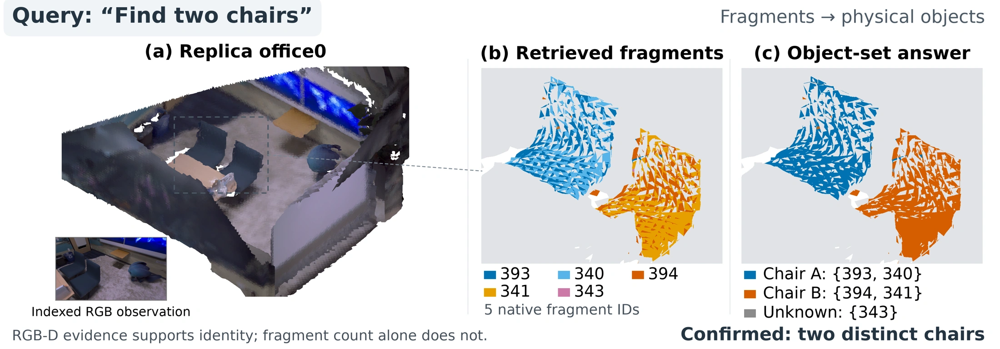

From Fragments to Objects
Diagnosing Object-Set Grounding in 3D Maps
Manuscript submitted to arXiv.
Finding two fragments is not the same as finding two chairs
Imagine asking a computer to “find two chairs” in a scanned room. The map stores a chair’s seat and backrest as separate fragments, each with its own ID. If the computer returns those two IDs, it has found two pieces of one chair, not two different chairs.
This project studies how to connect map fragments to physical objects and trace why a search succeeds or fails. A correct answer needs evidence that the returned pieces represent the requested number of different objects. A fragment whose identity is unclear can remain unresolved.
In the example below, five retrieved fragments support two chair groups: two pieces belong to Chair A, two belong to Chair B, and the remaining piece is uncertain. Counting the five map IDs would give the wrong number of chairs.

What I built
I built a query and evaluation workflow around existing FindAnything maps. It connects retrieved fragments to the original color and depth images, records which pieces appear to belong to the same object, and checks whether those judgments support an answer.
The workflow keeps a record of the evidence and decisions, called an identity ledger. This makes it possible to inspect a failure instead of seeing only a final answer. I also designed controlled comparisons that reuse exactly the same images and model responses while changing the final confirmation rule.
How the workflow handles “find two chairs”
- Retrieve possible chair fragments. The system searches the fixed map using the category “chair” and returns five candidates. The requested number does not change this candidate list.
- Look back at the recorded images. The fragments are projected into up to two selected RGB-D views: color images paired with depth measurements. The model sees the room context and details of each visible fragment. Depth checks help connect the reconstructed surface to the recorded observation.
- Decide which pieces belong together. A model call proposes object groups without being told whether the user wants one, two, or three chairs. It can judge two fragments to be parts of the same object, parts of different objects, or unresolved. This separates object grouping from the requested count.
- Review the proposed relationships. A second call checks proposed same-object pairs and representative distinctions between groups using the original evidence. It can correct or withhold a judgment. Both calls use the same model, so review can still repeat an earlier mistake.
- Check whether an answer is supported. Programmed rules inspect the recorded relationships before confirming the requested set. The strict Ledger version requires complete pairwise support within a group and evidence that established groups are distinct. Missing evidence can prevent confirmation even when the proposed answer happens to be correct.
For example, suppose A is judged to belong with B, and B with C, but the relationship between A and C is unknown. The strict rule does not automatically accept all three as one confirmed object. This is a rule about whether the evidence is sufficient; it does not guarantee that the model’s judgments are true.
Four different reasons a search can fail
The candidates are insufficient
The user asks for two chairs, but the retrieved list contains only pieces of one chair. Later reasoning cannot select a second distinct chair from those candidates.
The pieces are grouped incorrectly
A seat and backrest from the same chair are counted separately, or pieces of two different chairs are merged. This is an object-identity error.
The answer is confirmed incorrectly
The groups may be unchanged, but a permissive rule releases an unsupported answer. A strict rule may instead withhold an answer that is actually correct.
Only part of the object is located
The system identifies the right chair but returns a box around only its seat. Recognizing which chair a piece belongs to does not mean locating the complete chair.
How I tested it
The study uses five fixed Replica indoor maps. Four categories—chair, sofa, table, and lamp—and requests for one, two, or three objects produce 60 queries. The scenes contain enough target objects for 42 queries; the other 18 test requests for more objects than are present. The original pipelines each run three times.
The 20 scene/category candidate lists contain 100 entries and 152 prepared evidence images. Queries for different counts share candidates and observations, so they are not independent scene tests. Ground-truth object labels are used only for evaluation.
To isolate the effect of the final rules, I first reproduced all 180 recorded Ledger outcomes across the three runs. I then changed the confirmation rule while preserving the recorded model judgments and evidence. This tests what the rule changes without asking the model to generate a different answer.
What the experiments found
Some failures begin before the model can choose an answer
Under the primary rule for matching fragments to ground-truth objects, only 27 of the 42 positive queries have candidates that can form a verified answer. The resulting 64.3% ceiling is not achieved accuracy: it describes what is possible under those candidates and that evaluation rule. The ceiling changes with the matching threshold, while 11 queries remain ineligible throughout the tested range.
Visual review corrects some mistakes
In the primary fixed-response comparison, keeping the review step yields 10 verified positive answers out of 42, compared with 8 without review. It removes some observed mistaken merges. However, nine wrong-merge occurrences represent only three distinct fragment pairs repeated across count queries. Review does not fix every identity error or eliminate false confirmations.
Stricter confirmation changes which answers are released
With the same recorded judgments, a less restrictive cross-group rule confirms one additional correct answer in each run, but also confirms one additional wrong answer in two of the three runs.
| Confirmation rule | Verified positives per run, out of 42 | False confirmations per run, out of 18 negatives |
|---|---|---|
| Strict Ledger | 10 / 13 / 12 | 4 / 3 / 4 |
| Reviewed-subset cross-group rule | 11 / 14 / 13 | 5 / 3 / 5 |
The object groups do not change. All five changed query/run outcomes come from one sofa candidate list; the other 19 lists have no answer changes. This shows a local tradeoff in whether answers are confirmed, rather than a general improvement in recognizing which fragments belong together.
A correct identity can still give an incomplete location
In one example, the system identifies the correct chair but returns geometry mainly covering its seat. The predicted box is only 0.222 m high, while the complete chair is 1.092 m high. A score for choosing the correct object can therefore hide poor coverage of that object’s shape.
How verification and the controlled comparison work
A confirmed answer has passed the executor’s checks. A verified answer also passes the evaluation against ground-truth objects. If a fragment cannot be reliably associated with a ground-truth instance, a confirmed answer may remain indeterminate rather than being proven correct or wrong. The primary association thresholds are 90% dominant-instance purity and valid-label coverage.
The exact confirmation-rule comparison retains Ledger’s within-group checks and registry. It replaces only the requirement for complete cross-group distinctness with a reviewed-subset rule: reviewed cross-pairs must be different, an explicitly reviewed unknown blocks confirmation, and at least one recorded different pair is required if none were reviewed. This reproduces all Stateless-PR answers across three runs without changing object memberships.
The strict multi-object gate checks all established groups, including unselected ones. Count-independent proposal and review are also used in the comparison adapters, so withholding the requested count is not unique to Ledger. The study does not directly test whether providing a count causes a model to invent extra objects.
Why this matters
The workflow helps identify what needs improvement. Missing candidates call for better retrieval or map coverage. Incorrect grouping calls for better identity judgments. Unsupported answers call for changes to confirmation rules. Incomplete boxes call for better geometric localization. A single final accuracy score can hide these different problems.
The experiments show that stronger checks can reject both incorrect and correct answers, without repairing the underlying groups. The contribution is a way to trace and test these failures separately, with concrete evidence for what each stage changes.
The study is small, uses fixed synthetic indoor scenes, and includes scenes used during development. It does not establish a general accuracy advantage for stricter Ledger rules. Robot navigation, new-view acquisition, and manipulation are outside the experiments.